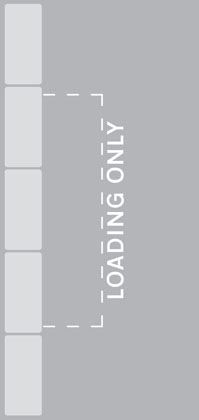

Signs and Signals > Road markings
Across the carriageway

Stop line at signals or police control

Stop line at ‘Stop’ sign

Stop line for pedestrians at a level crossing

Give way to traffic on major road (can also be used at mini roundabouts)

Give way to traffic from the right at a roundabout

Give way to traffic from the right at a mini-roundabout
Along the carriageway

Edge line

Centre line

Hazard warning line

Double white lines

Double white lines

Lane line

Areas of white diagonal stripes
Along the edge of the carriageway
Waiting restrictions indicated by yellow lines apply to the carriageway, pavement and verge. You may stop to load or unload (unless there are also loading restrictions as described below) or while passengers board or alight. Double yellow lines mean no waiting at any time, unless there are signs that specifically indicate seasonal restrictions. The times at which the restrictions apply for other road markings are shown on nearby plates or on entry signs to controlled parking zones. If no days are shown on the signs, the restrictions are in force every day including Sundays and Bank Holidays. White bay markings and upright signs (see below) indicate where parking is allowed.

No waiting at any time

No waiting during times shown on sign

Waiting is limited to the duration specified during the days and times shown

No stopping at any time

No stopping during times shown on sign

Parking is limited to the duration specified during the days and times shown

Only loading may take place at the times shown for up to a maximum duration of 20 mins
On the kerb or at the edge of the carriageway
Loading restrictions on roads other than Red Routes
Yellow marks on the kerb or at the edge of the carriageway indicate that loading or unloading is prohibited at the times shown on the nearby black and white plates. You may stop while passengers board or alight. If no days are indicated on the signs the restrictions are in force every day including Sundays and Bank Holidays.
ALWAYS CHECK THE TIMES SHOWN ON THE PLATES.
Lengths of road reserved for vehicles loading and unloading are indicated by a white ‘bay’ marking with the words ‘Loading Only’ and a sign with the white on blue ‘trolley’ symbol. This sign also shows whether loading and unloading is restricted to goods vehicles and the times at which the bay can be used. If no times or days are shown it may be used at any time. Vehicles may not park here if they are not loading or unloading.

No loading or unloading at the times shown

Loading bay
Other road markings

Keep entrance clear of stationary vehicles, even if picking up or setting down children.

Warning of ‘Give Way’ just ahead

Parking space reserved for vehicles named

Bus stop

Bus lane

Box junction

Do not block that part of the carriageway indicated

Indication of traffic lanes